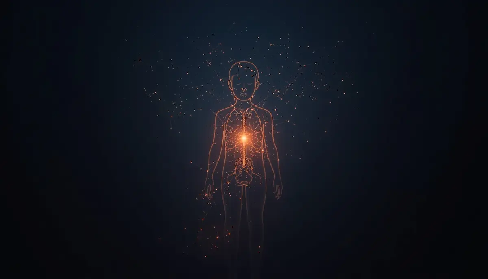
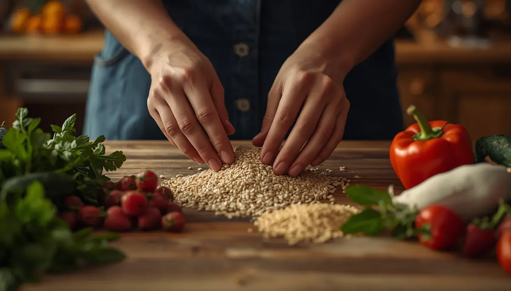
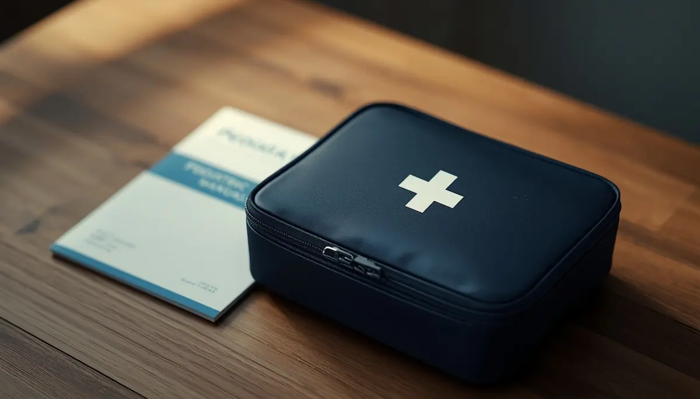

Guías de salud y bienestar infantil
Un espacio divulgativo riguroso y accesible diseñado para acompañar a las familias en el cuidado diario, la prevención y la comprensión de las necesidades médicas, emocionales y de desarrollo de la infancia.
🎗️ Guías principales y crónicas

Cáncer infantil
Guía completa de acompañamiento emocional y clínico desde el diagnóstico hasta la vida después.

Diabetes infantil
Control diario, pautas de alimentación y gestión de la rutina en el hogar y la escuela.
Obesidad infantil
Promoción de hábitos de vida saludables, nutrición equilibrada y bienestar físico activo.
Asma infantil
Identificación de desencadenantes, prevención de crisis y pautas claras para el entorno.
🧠 Neurodesarrollo y aprendizaje

TDAH y pautas de apoyo
Estrategias prácticas para la atención, la hiperactividad y el acompañamiento positivo en casa.
Autismo (TEA) e integración sensorial
Estrategias de apoyo, comprensión del entorno y adaptación a las necesidades sensoriales.
Trastorno del desarrollo del lenguaje (TEL/TDL)
Una guía amable, rigurosa y empática para comprender las dificultades en la expresión y comprensión del lenguaje en la infancia.
🥗 Nutrición, piel y bienestar físico

Celiaquía e intolerancias
Guía práctica para familias sobre alimentación segura, etiquetas y adaptación del hogar.
Dermatitis atópica
Cuidados específicos para la piel sensible, prevención de brotes y alivio del picor.
Trastornos del sueño
Abordaje del insomnio infantil, rutinas de descanso reparador y terrores nocturnos.
Salud bucodental
Prevención temprana de caries, hábitos de higiene y primeras visitas al odontopediatra.
Salud visual infantil
Prevención de la fatiga digital por pantallas y detección precoz de problemas de visión.
❤️ Salud emocional y seguridad
Ansiedad infantil
Herramientas prácticas y recursos cotidianos para la gestión del estrés y los miedos.
Epilepsia infantil
Pautas de actuación claras y protocolos seguros para el entorno familiar y educativo.

Prevención y primeros auxilios
Guía básica de prevención de accidentes infantiles y pautas iniciales de actuación.